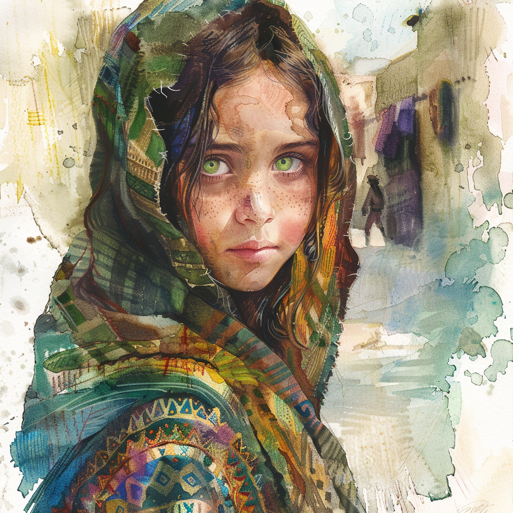

Dot
General Description
Age: 7 years old
Occupation: Thief
Background: Lost her family in the previous war that ravaged the outskirts of "Town". Since then, she has survived on the streets, thieving to make ends meet. Despite her situation, she maintains a spark of hope and a clever, if cautious, spirit.
Appearance
 Small and wiry, with sun-kissed skin and hair that hasn't seen a comb in weeks. Her clothes are a patchwork of different fabrics, clearly scavenged and adapted over time. Her eyes, a vivid shade of green, are wide and observant, always scanning her surroundings.
Personality
Dot is a bundle of contradictions. She's resourceful and quick on her feet, having learned to navigate the treacherous streets of "Town". However, she's also deeply scarred by the loss of her family and the constant bullying from other orphans, which has made her mistrustful of others. Despite her tough exterior, she's terrified of violence and confrontation, especially from adults who are far stronger than she is.
Abilities
- Stealth: Years of thieving have honed her ability to move unseen and unheard.
- Survival: She knows "Town" like the back of her hand, aware of which areas to avoid and where to find food or a place to hide.
- Lockpicking: A skill developed out of necessity, allowing her to scavenge more effectively.
History
After losing her family in the war, she was left to fend for herself. Without a name she remembers, she became a ghost among the crowded streets of "Town", overlooked and underestimated by most. The other orphans, forming gangs of their own, often pick on her for being alone and small, forcing her to rely on her wits and agility to escape their cruelty.
Current Situation
When the party arrives in "Town", she sees an opportunity to secure food or coin by pilfering from these unfamiliar faces. However, upon being caught, her immediate reaction is fear—fear of punishment, fear of violence. To her surprise, the party doesn't react as she expects. Instead, they offer a chance at redemption: help them find a hidden exit out of "Town", something she's uniquely capable of due to her intimate knowledge of the city's secrets.
Her decision to help the party, driven by a mix of gratitude and a desperate longing for acceptance, marks the beginning of a new chapter in her life. Though she still struggles with her past traumas and fears, the kindness shown by the party sparks a faint hope for a better future, perhaps even a new family of sorts.
Tags: #CharacterProfile #StreetUrchin #NPC #TheNamelessUrchin